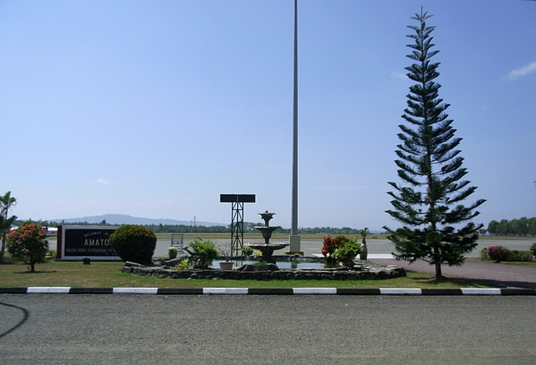

Ambon
 |
28 Nov 2015, Ambon, Indonesia
Shell art with reflection. Not diliberate, but impossible to avoid during the day without a polarizing filter. This piece of art was hanging on the wall in the Ambon airport, and the only one that caught my attention.
Found a tiny shop in the front of airport that sold cell phone parts, but not sim cards. Walked out of the airport complex and crossed the road where a string of shops were begging for attention. The first merchant said yes -- but all the sims were the old style, full size. No problem, just cut and trim to size, which she did in less than 5 minutes, while I enjoyed a refreshing drink.
Now it was time to investigate the dirt road leading up through a village. Saw this Jack fruit tree with lots of plants growing on it. It's not too unusual to see many organisms enveloping a tree in S.E.Asia. I suspect pictured growths are parisitic, and will eventually kill this jack fruit tree.
The dirt road traveled through the village, then started winding up a small hill, with stream on the opposite side. Earthern dam. Gravel quary with lots of trucks. Everyone is so friendly! But it's getting HOT, so I turn around and head back to the airport. Need to re-hydrate. Special Topics:
-------------------------------------------
Left Bangkok about 6pm Friday for Jakarta, where we tried to stock up on Rupiah for the next two weeks or so during the layover. ATM card stopped working after less than half the needed Indonesian Rupiah. I had called Wells Fargo a week earlier, and thay assured me my daily limit was now increased to $800 (got it in writing!). Wells Fargo screws up again. So, cashed in most of my remaining US$, then on to Ambon in the Moluccas, arriving at 7am. Not much of a layover here either, but long enough to buy an Indonesian sim card and walk around a little.
-------------------------------------------